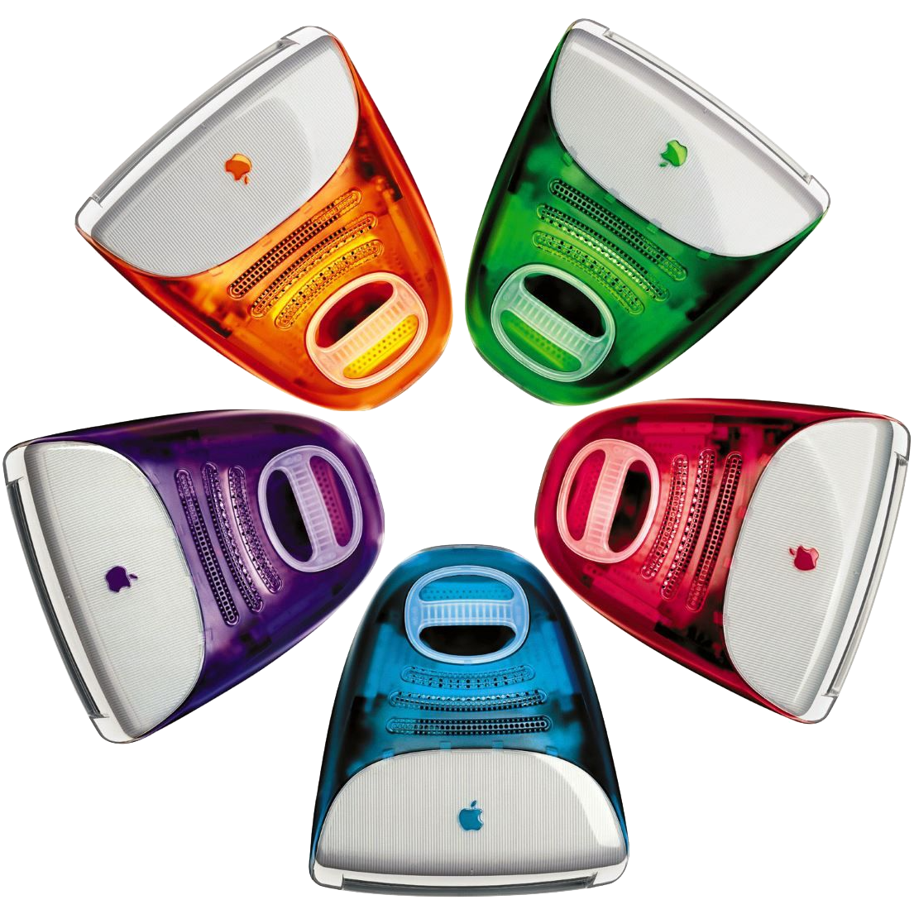

iMac
The most colorfu way to the
Internet
 From USD 1,299
From USD 1,299
From USD 1,299
Get the highlights.
All-in-One Wonder.No tower. No mess. Just one bold piece of
translucent brilliance. Everything. Together.

5 new striking translucent color designs In world's best all in
one Desktop

The original G3 chip delivered performance that was unheard of
in an all-in-one.

The iMac G3 simplifies internet connectivity with
built-in Ethernet and a dial-up modem, allowing users to get
online straight out of the box.
Its plug-and-play design and preinstalled browser make accessing the
web easy and intuitive, especially for first-time users. The G3
continues to represent a major leap in making the internet more
approachable for everyone.
Smarts inside.
The iMac G3 is powered by the PowerPC G3 processor, which delivers
fast and efficient performance for everyday tasks. Designed by Apple
and IBM, the G3 chip uses a RISC (Reduced Instruction Set Computing)
architecture that handles instructions more efficiently than older
processors. It enables smooth web browsing, quick application
launches, and reliable multitasking, all while generating less heat.
The PowerPC G3 is a key factor in the iMac's responsive and
streamlined user experience.

Splash of Colors
The iMac G3 stands out with its vibrant range of colors, breaking away from the dull, beige computers of the past. It first launches in Bondi Blue, then expands into a spectrum of bold, translucent hues like Tangerine, Grape, Strawberry, and Blueberry. Each color not only reflects personality and style but also transforms the computer into a fun, expressive part of the user's space. The playful design redefines what a computer can look like—inviting, modern, and uniquely yours.
The best Mac ever made.
The iMac G3 redefines computer design with its all-in-one, translucent shell and rounded, approachable form. Unlike traditional boxy PCs, the G3 combines monitor and CPU into a single, colorful unit that feels modern and friendly. Its handle, curved edges, and visible internal components turn the computer into a piece of art—something meant to be seen, not hidden under a desk.
Developer's Note
a passionate designer, developer, and tech enthusiast. I built this site as a tribute to the legendary iMac G3, blending nostalgia with modern web design. I love bringing ideas to life through clean interfaces, thoughtful interactions, and a touch of creativity. Whether it’s a retro concept or a futuristic UI, I enjoy exploring how design and code can tell a story. Thanks for visiting and scrolling through this little piece of Apple history!